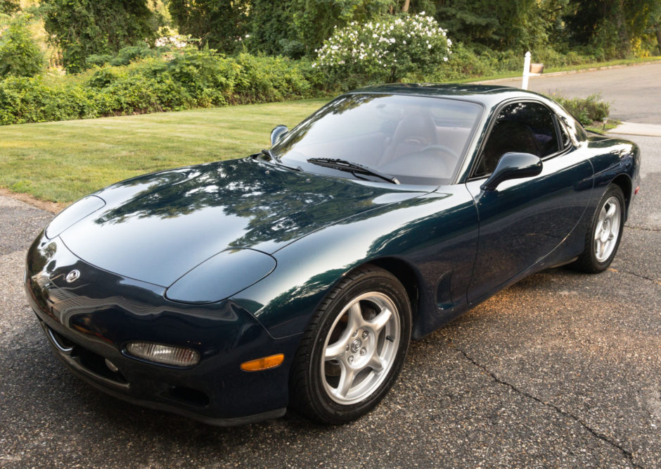

Mazda RX-7
Tentang Mazda RX-7
Mazda RX-7 adalah mobil sport yang diproduksi oleh mobil Jepang Mazda 1978-2002. Asli RX-7 menampilkan cc twin-rotor mesin rotary Wankel 1146 dan front-midship, tata letak rear-wheel drive. RX-7 menggantikan RX-3 (baik yang dijual di Jepang sebagai Savanna) dan kemudian digantikan semua mobil Mazda lainnya rotary-mesin kecuali Cosmo. Asli RX-7 adalah mobil sport dengan lampu depan pop-up. Kompak dan ringan mesin Wankel (mesin rotary) terletak sedikit di belakang as roda depan, konfigurasi dipasarkan oleh Mazda sebagai "front mid-engine". Itu ditawarkan sebagai coupe dua kursi, dengan opsional "sesekali" kursi belakang di Jepang, Australia, Amerika Serikat, dan bagian lain dunia. Ini kursi belakang awalnya dipasarkan sebagai pilihan agen-instal untuk pasar Amerika Utara.
Generasi Pertama (SA22CC)
Seri 1 (1978-1980) sering disebut sebagai "SA22C" dari alphanumerics pertama dari nomor identifikasi kendaraan. Ini rangkaian RX-7 telah terkena baja bumper dan lekukan-terletak plat tinggi-mount, yang disebut oleh Werner Buhrer Jalan & Jalur majalah "depresi Baroque." Di Jepang diperkenalkan pada Maret 1978, menggantikan Savanna RX-3. The lead designer di Mazda adalah Matasaburo Maeda, yang putranya Ikuo akan pergi untuk merancang Mazda2 dan Mazda RX-8.
Pada bulan Mei 1980, Mazda merilis 2.500 model Amerika Utara khusus yang dikenal sebagai LS (Leather Sport). Paket ini pada dasarnya model GS uprated dengan menambahkan lencana LS pada setiap pilar-B, striping khusus, dan LS-satunya roda emas anodized (dengan wajah luar dipoles dan velg). Semua edisi LS datang dilengkapi dengan khusus LS-hanya penuh jok kulit coklat, kulit dibungkus roda kemudi, shift knob dibalut kulit, sunroof dilepas, LS-spesifik empat speaker Radio AM / FM stereo dengan antena listrik (meskipun terdaftar sebagai enam speaker stereo , sebagai dua ganda belakang speaker voice coil dihitung sebagai empat pembicara dalam total), jauh kekuatan pintu kaca spion samping, dan peralatan GS standar lainnya. Dua pilihan utama yang juga tersedia, sebuah JATCO transmisi 3N71B otomatis tiga kecepatan dan AC. Pilihan GS lain seperti kaset tape deck, penjaga splash, empuk pusat arm rest konsol dan lain-lain bisa ditambahkan oleh dealer. Model LS hanya pernah tersedia dalam tiga warna eksterior yang berbeda: Aurora Putih (1.000 dibuat), Brilliant Black (1.000 dibuat) dan Surya Emas (500 dibuat). Perkiraan produksi dalam kurung diterima secara luas estimasi per warna, meskipun tidak ada catatan produksi resmi diketahui ada atau telah dibebaskan, selain dari total gabungan angka produksi 2.500 unit.
Seri 2 (1981-1983) telah terintegrasi bumper plastik tertutup, lebar hitam sisi cetakan tubuh karet, lampu belakang sampul dan komponen kontrol mesin diperbarui. Paket GSL disediakan opsional four-wheel disc brakes, depan berventilasi (model Australia) dan kopling-belakang tipe limited slip differential (LSD). Dikenal sebagai "FB" di Amerika Utara setelah US Department of Transportation dimandatkan 17 digit Nomor Identifikasi Kendaraan changeover. Untuk berbagai pasar lain di seluruh dunia, 1981-1985 RX-7 mempertahankan 'SA22C' awalan VIN. Di Inggris, 1978-1980 seri 1 mobil membawa kode SA pada kendaraan VIN tapi semua mobil kemudian (1981-1983 seri 3 & 1984-1985 seri 3) membawa kode FB dan ini generasi pertama RX7 yang dikenal sebagai "FB ". The plat surround terlihat sama seperti Buhrer itu "Tayangan Styling."
Seri 3 (1984-1985) menampilkan sebuah diperbarui fasia depan lebih rendah. Model Amerika Utara menerima instrument cluster yang berbeda (NA S3 RX-7 adalah satu-satunya mobil bermesin rotary untuk tidak memiliki tachometer pusat mount). Paket GSL dilanjutkan ke seri ini, tapi Mazda memperkenalkan GSL-SE sub-Model. GSL-SE memiliki bahan bakar disuntikkan 1,3 L 13B mesin RE-EGI memproduksi 135 hp (101 kW) dan � 135 � ft (183 N � m). GSL-UK memiliki banyak opsi yang sama seperti GSL (kopling tipe belakang LSD dan rem cakram belakang), tapi rotor rem yang lebih besar, memungkinkan Mazda untuk menggunakan kacang lug lebih umum (versus baut), dan pola baut baru 4x114.3 (4x4.5 "). Juga, mereka telah upgrade suspensi dengan pegas kaku dan guncangan. The oil cooler eksternal diperkenalkan kembali, setelah jatuh di tahun 1983 model tahun untuk kontroversial" sarang lebah "heat exchanger air-minyak. 1984 RX-7 GSL diperkirakan memiliki 29 kilometer jalan raya per galon (8,11 liter per 100 km) / 19 km kota diperkirakan per galon (12,37 l/100 km). Menurut Mazda, mesin rotary nya, dilisensi oleh NSU-Wankel memungkinkan RX-7 GSL untuk mempercepat 0-50 (80 km / jam) dalam 6,3 detik. Kelley Blue Book, pada tahun 1984 yang edisi Januari-Februari, mencatat bahwa 1981 RX-7 GSL ditahan 93,4% dari harga stiker aslinya.
Pada tahun 1985 Mazda merilis RX7 Finale di Australia. Ini adalah yang terakhir dari seri dan dibawa keluar dalam jumlah terbatas. Finale ini menampilkan opsi daya dan sebuah plakat kuningan menyebutkan mobil jumlah itu serta "terakhir dari legenda" pada plak. Finale memiliki stiker khusus dan seksi dari dihitamkan antara jendela & menetas belakang. Penanganan dan percepatan mobil yang tercatat menjadi kaliber tinggi untuk zamannya. Generasi ini RX-7 telah "hidup poros" 4-link suspensi belakang dengan linkage Watt, rasio 50/50 berat badan, dan beratnya di bawah � 2.500 (1.100 kg). Itu generasi paling ringan dari RX-7 yang pernah diproduksi. Model 12A bertenaga dipercepat dari 0-60 mph dalam 9,2 detik, dan berbalik 0,779 g (7.64 m / s �) lateral pada skidpad a. Mesin 12A menghasilkan 100 hp (75 kW) pada 6.000 rpm, memungkinkan mobil untuk mencapai kecepatan lebih dari 120 mil per jam (190 km / jam). Karena kelancaran melekat di mesin rotary Wankel, sedikit getaran atau kekerasan dialami pada kecepatan mesin tinggi, sehingga bel dipaskan dengan tachometer untuk memperingatkan pengemudi ketika 7.000 rpm redline mendekat. Mesin 12A memiliki ruang pembakaran berbentuk tipis panjang, yang memiliki luas permukaan besar dalam hubungannya dengan volumenya. Oleh karena itu, pembakaran dingin, memberikan beberapa oksida nitrogen. Namun, pembakaran juga tidak lengkap, sehingga ada sejumlah besar hidrokarbon sebagian dibakar dan karbon monoksida. Knalpot yang cukup panas untuk pembakaran ini untuk melanjutkan ke knalpot. Sebuah mesin pompa didorong pasokan udara ke dalam knalpot untuk menyelesaikan membakar bahan kimia ini. Hal ini dilakukan dalam "termal reaktor" ruang di mana manifold knalpot biasanya akan pada mesin konvensional. Dalam kondisi tertentu pompa menyuntikkan udara ke dalam reaktor termal dan pada waktu lain udara dipompa melalui injektor ke dalam port knalpot. Udara segar ini diperlukan untuk lebih efisien dan bersih pembakaran campuran udara / bahan bakar. [4] Pilihan dan model bervariasi dari satu negara ke negara. Tata letak gauge dan styling interior di Seri 3 hanya berubah untuk versi Amerika Utara. Selain itu, Amerika Utara adalah satu-satunya pasar telah menawarkan generasi pertama RX-7 dengan bahan bakar injeksi 13B, Model GSL-SE. Penjualan dari generasi pertama RX-7 yang kuat, dengan total 474.565 mobil generasi pertama diproduksi; 377.878 (hampir delapan puluh persen) yang dijual di Amerika Serikat saja. Pada tahun 2004, Sports Car International bernama mobil ini ketujuh dalam daftar mereka Top Mobil Olahraga tahun 1970-an. Pada tahun 1983, RX-7 akan muncul di majalah Car and Driver Sepuluh Terbaik daftar untuk pertama kalinya dalam 20 tahun.
Generasi Kedua (FC)
Seri 4 (1986-1988) yang tersedia dengan naturally aspirated, bahan bakar injeksi 13B-VDEI memproduksi 146 hp (108 kW). Model turbocharged opsional, (1987-1988) dikenal sebagai Turbo II di pasar Amerika, memiliki 182 hp / 185 ps (135 kW). Seri 5 (1989-1992) menampilkan diperbarui styling dan manajemen mesin yang lebih baik, serta rotor ringan dan rasio kompresi yang lebih tinggi, 9.7:1 untuk model naturally aspirated, dan 9.0:1 untuk model turbo. Disedot secara alami Seri 5 FC membuat 160 hp (119 kW), sedangkan Seri 5 Turbo dibuat 200 hp / 205 ps (147 kW). Generasi kedua RX-7 ("FC", VIN dimulai JM1FC3 atau JMZFC1), masih dikenal sebagai Savanna RX-7 di Jepang, menampilkan restyling mengingatkan lengkap dari Porsche 944 atau Porsche 924. Stylist Mazda, yang dipimpin oleh Project Engineer Kepala Akio Uchiyama, difokuskan pada Porsche 944 untuk inspirasi mereka dalam merancang FC karena mobil baru sedang ditata terutama untuk pasar Amerika, di mana sebagian besar generasi pertama RX-7 telah terjual. Strategi ini dipilih setelah Uchiyama dan lain-lain di tim desain menghabiskan waktu di Amerika Serikat mempelajari pemilik sebelumnya RX-7 dan mobil sport lainnya populer di pasar Amerika. Porsche 944 menjual dengan baik pada saat itu dan memberikan petunjuk tentang apa yang penggemar mobil sport mungkin menemukan menarik di masa depan RX-7 styling dan peralatan. Sementara SA22/FB adalah mobil sport murni, FC cenderung ke arah lebih lembut tren sport tourer hari nya. Penanganan lebih ditingkatkan, dengan kurang dari kecenderungan oversteer dari FB. Desain bagian belakang yang jauh lebih baik dari poros belakang hidup FB untuk yang lebih modern, Independent Rear Suspension (poros belakang). Pengarah adalah lebih tepat, dengan rak dan pinion kemudi menggantikan yang lama kemudi bola sirkulasi dari FB. Rem cakram juga menjadi standar, dengan beberapa model (S4: Sport, GXL, GTU, Turbo II, Convertible, S5: GXL, GTUs, Turbo, Convertible) menawarkan empat piston rem depan. Kursi belakang adalah opsional dalam beberapa model FC RX-7, tetapi tidak umum ditemukan di Pasar Amerika. Mazda juga memperkenalkan Dinamis Pelacakan Suspension System (DTSS) di generasi ke-2 RX-7. Revisi suspensi belakang independen dimasukkan hub kontrol kaki khusus yang mampu memperkenalkan tingkat terbatas kemudi belakang pasif di bawah beban menikung. Para DTSS bekerja dengan memungkinkan jumlah sedikit toe-out di bawah kondisi mengemudi normal, tetapi diinduksi sedikit toe-in di bawah beban menikung lebih berat sekitar 0,5 G atau lebih; ??toe-out di bagian belakang memungkinkan untuk rotasi lebih responsif dari belakang, tapi toe-in memungkinkan untuk belakang lebih stabil dalam menikung lebih berat. Mazda juga memperkenalkan Auto Mengatur Suspension (AAS) di generasi ke-2 RX-7. Sistem ini berubah karakteristik redaman sesuai dengan jalan dan kondisi mengemudi. Sistem kompensasi untuk perubahan camber dan memberikan anti-menyelam dan efek anti-jongkok. Turbo 2 menggunakan turbo charger dengan desain gulir kembar. Ruang utama yang lebih kecil adalah rekayasa untuk membatalkan turbo lag pada kecepatan mesin rendah. Pada revolusi tinggi ruang sekunder dibuka, memompa keluar daya 33% lebih dari rekan naturally aspirated. Turbo 2 juga memiliki intercooler udara-ke-udara yang memiliki asupan khusus pada kap mesin. Intake sedikit offset ke sisi kiri tenda. Meskipun sekitar � 800 (363 kg) lebih berat dan lebih terisolasi dari pendahulunya, FC terus memenangkan penghargaan dari pers. The FC RX-7 adalah Motor Trend yang Impor Car of the Year untuk tahun 1986, dan Turbo II pada Mobil dan Driver majalah Sepuluh Terbaik daftar untuk kedua kalinya pada tahun 1987. Di pasar Jepang, hanya mesin turbo yang tersedia, versi naturally aspirated diizinkan hanya sebagai ekspor. Hal ini dapat dikaitkan dengan perusahaan asuransi menghukum mobil turbo (sehingga membatasi potensi penjualan). Penekanan pada mengandung tenaga kuda dan menenangkan perusahaan asuransi untuk membuat RX-7 lebih terjangkau tampaknya ironis dalam retrospeksi. Tak lama setelah penghentian generasi kedua RX-7 tahun 1992, yang langsung tenaga kuda "perlombaan senjata" pecah antara produsen mobil sport, dengan tingkat yang lebih tinggi dan lebih tinggi dari daya yang diperlukan untuk memenuhi permintaan pembeli. Fenomena meningkatnya tenaga kuda muncul dari standar CAFE AS masih stabil sementara teknologi mesin berbaris maju pesat. Mazda dijual 86.000 RX-7 yang ada di Amerika Serikat saja pada tahun 1986, model tahun pertama, dengan penjualan mencapai puncaknya pada tahun 1988. Australia Motors Mazda merilis jangka terbatas 250 'Olahraga' model Seri 4 RX-7, masing-masing tanpa power steering, power window atau wiper belakang sebagai upaya untuk mengurangi berat mobil. Di Jepang, ada terbatas rilis khusus dari FC disebut Infini dengan hanya 600 dibuat untuk setiap tahun. Beberapa fitur mencatat khusus untuk semua seri Infini adalah: Infini logo di bagian belakang, suspensi upgrade, upgrade ECU, tenaga kuda yang lebih tinggi, meringankan berat badan, 15 inci BBS velg aluminium, Infini logo roda kemudi, bumper kit aero, perunggu jendela kaca berwarna, lantai bar di sisi penumpang, aluminium kap dengan sendok, flare dan pemegang. Mobil itu dianggap sebagai puncak dari seri RX-7 (sampai FD keluar). The Infini IV datang dengan item khusus lainnya seperti kursi hitam ember, roda BBS 16 inci, bantalan lutut, dan semua item lainnya yang disebutkan sebelumnya. Ada yang berbeda tahun untuk Infini, yang mencatat seri. Seri I diperkenalkan pada tahun 1987, Seri II diperkenalkan pada tahun 1988, Seri III diperkenalkan pada tahun 1990, dan Seri IV diperkenalkan pada tahun 1991. Seri I dan II datang Putih atau Hitam, Seri III datang Hutan Hijau saja, dan Seri IV datang Hutan Hijau atau Noble Green. Hanya ada sedikit perbedaan antara seri, perubahan terbesar yang berasal dari Seri II menjadi S4 (1986-1988) dan Seri III dan IV menjadi S5 (1989-1991).
Generasi Ketiga (FD)
Generasi ketiga dari RX-7, FD (dengan FD3S untuk JDM dan JM1FD untuk Amerika Serikat VIN), menampilkan sebuah desain bodi diperbarui. The 13B-REW adalah yang pertama kalinya diproduksi secara massal sekuensial sistem twin-turbocharger untuk ekspor dari Jepang, meningkatkan daya hingga 255 PS (188 kW; 252 hp) pada tahun 1993 dan akhirnya 280 PS (206 kW, 276 hp) pada saat produksi berakhir di Jepang pada tahun 2002. FD RX-7 adalah Motor Trend yang Impor Car of the Year. Ketika Playboy terlebih dahulu dikaji FD RX-7 tahun 1993, mereka diuji dalam edisi yang sama dengan [kemudian] baru Dodge Viper. Dalam masalah itu, Playboy menyatakan RX-7 menjadi lebih baik dari dua mobil. Ia pergi untuk memenangkan Mobil Playboy Tahun untuk tahun 1993. FD RX-7 juga membuat mobil dan Sepuluh daftar Driver Terbaik untuk tahun 1993 sampai tahun 1995, untuk setiap tahun di mana itu dijual negara-side. June, 2007 Jalan & Jalur menyatakan "The ace dalam lengan Mazda adalah RX-7, mobil sekali disebut-sebut sebagai yang paling murni, mobil sport paling menggembirakan di dunia." The sekuensial sistem turbocharged kembar adalah bagian yang sangat kompleks teknik, dikembangkan dengan bantuan Hitachi dan sebelumnya digunakan pada seri Cosmo domestik (JC Cosmo = 90-95). Sistem ini terdiri dari dua turbocharger kecil, satu untuk memberikan dorongan pada RPM rendah. The 2nd unit ini siaga sampai paruh atas kisaran rpm saat akselerasi full throttle. Turbocharger pertama disediakan 10 psi (0,7 bar) dari dorongan dari 1.800 rpm, dan turbocharger 2nd diaktifkan pada 4000 rpm dan juga disediakan 10 psi (0,7 bar). Proses pergantian terjadi pada 4500 rpm, 8 psi (0,6 bar), halus, dan memberikan percepatan linier dan kurva torsi yang luas di seluruh rentang putaran. Penanganan di FD dianggap sebagai kelas dunia, dan masih dianggap sebagai salah satu penanganan terbaik dan mobil seimbang terbaik sepanjang masa. [Rujukan?] Terus menggunakan mesin front-midship tata letak dan drivetrain, dikombinasikan dengan rasio depan-belakang distribusi berat 50:50 dan pusat gravitasi rendah membuat FD mobil yang sangat kompeten di batas. Australia memiliki versi kinerja tinggi khusus dari RX-7 tahun 1995, dijuluki SP RX-7. Model ini dikembangkan sebagai homologated versi jalan-akan mobil balapan pabrik yang digunakan dalam balapan ketahanan 12 jam diadakan di Bathurst, New South Wales, dimulai pada tahun 1991 untuk acara 1995 diadakan di Eastern Creek, Sydney, New South Wales. Menjalankan awal dari 25 dibuat, dan kemudian seorang 10 ekstra dibangun oleh Mazda karena permintaan. RX-7 SP diproduksi 204 kW (274 hp) dan 357 N � m (� 263 � ft) dari torsi, dibandingkan dengan 176 kW (236 hp) dan 294 N � m (� 217 � ft) dari versi standar . Perubahan lain termasuk lomba mengembangkan serat karbon kerucut hidung dan spoiler belakang, serat 120 tangki bahan bakar L karbon (sebagai lawan tangki L 76 di mobil standar), diferensial belakang 4.3:1-rasio, velg 17-inci, lebih besar rotor rem dan kaliper. Sebuah intercooler ditingkatkan, knalpot, dan modifikasi ECU juga disertakan. Berat berkurang secara signifikan dengan bantuan penggunaan serat karbon lebih lanjut termasuk topi vented ringan dan kursi Recaro untuk mengurangi berat badan hanya 1.050 kg (dari 1150 kg). Itu adalah jalan menuju mobil balap serius yang cocok saingan mereka Porsche 911 RS CS untuk tahun terakhir Mazda resmi masuk. Rumus terbayar ketika SP RX-7 memenangkan gelar, memberikan Mazda trofi 12 jam pemenang untuk tahun keempat berturut-turut. Para pemenang mobil juga memperoleh podium di aspal internasional reli Targa Tasmania bulan kemudian. Sebuah versi khusus, Bathurst R, dirilis pada tahun 2001 untuk memperingati ini, di Jepang saja. Di Inggris, tahun 1992, pelanggan ditawarkan hanya satu versi dari FD yang didasarkan pada kombinasi dari tur AS dan model dasar. Untuk tahun berikutnya, dalam upaya untuk mempercepat penjualan, Mazda mengurangi harga RX-7 sampai � 25.000, turun dari � 32.000 dan dikembalikan perbedaan bagi mereka yang membeli mobil sebelum yang diumumkan. FD terus diimpor ke Inggris sampai tahun 1996. Pada tahun 1998, untuk sebuah mobil yang telah menderita penjualan lambat ketika secara resmi dijual, dengan lonjakan kepentingan dan manfaat dari skema SVA baru diperkenalkan, FD akan menjadi begitu populer bahwa ada model yang diimpor lebih paralel dan abu-abu dibawa ke negara daripada Mazda Inggris pernah diimpor.